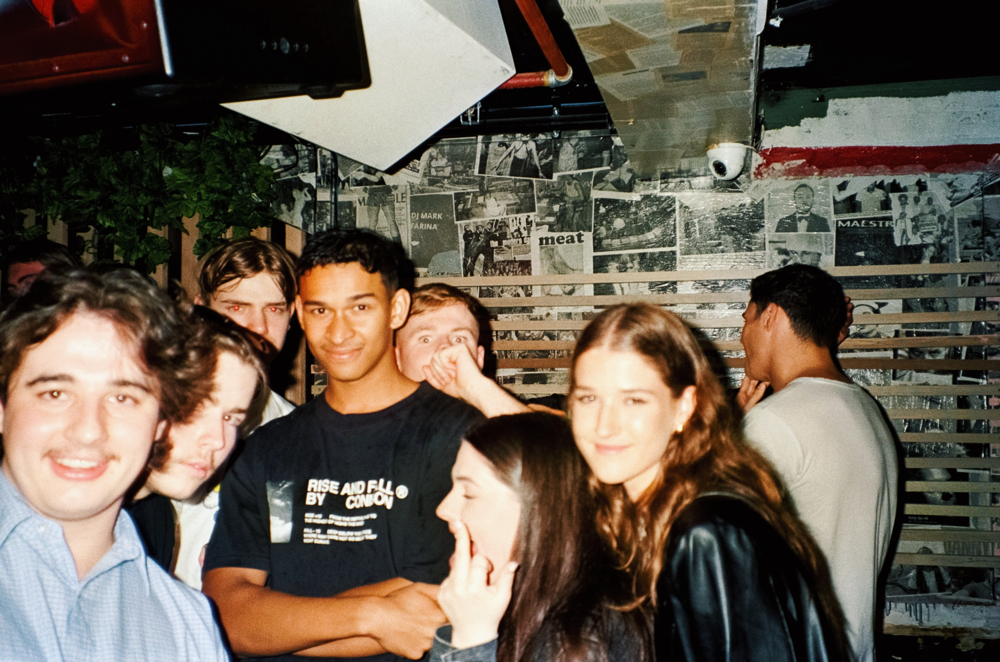

In this podcast, we delve into a wide range of topics that are relevant to our lives as students, from discussing the latest trends and pop culture, to sharing our thoughts on the challenges and triumphs of navigating college life. Join us as we explore these subjects in a fun, informative and entertaining way, and stay tuned for what we have in store for the next episode!
In this episode of our podcast, we take a closer look at our personal experiences in community college and delve into the question of whether it's truly worth the time, effort, and financial investment. We share our insights, discuss the advantages and disadvantages, and provide valuable tips and advice for anyone considering community college as an option for their education. Tune in to gain a deeper understanding of the community college experience and make an informed decision for your academic future ;)

Are you tired of swiping left on every girl who mentions her zodiac sign in her bio? Do you think astrology-women are as reliable as your WiFi signal on a stormy day? Well, you're not alone! In this episode, we dive into the cosmic world of astrology and debunk the myth that it's a red flag. Who knows, you might even discover that your soulmate is a Pisces with a rising moon in Capricorn. Don't miss it, or you'll be stuck with those Gemini's forever!